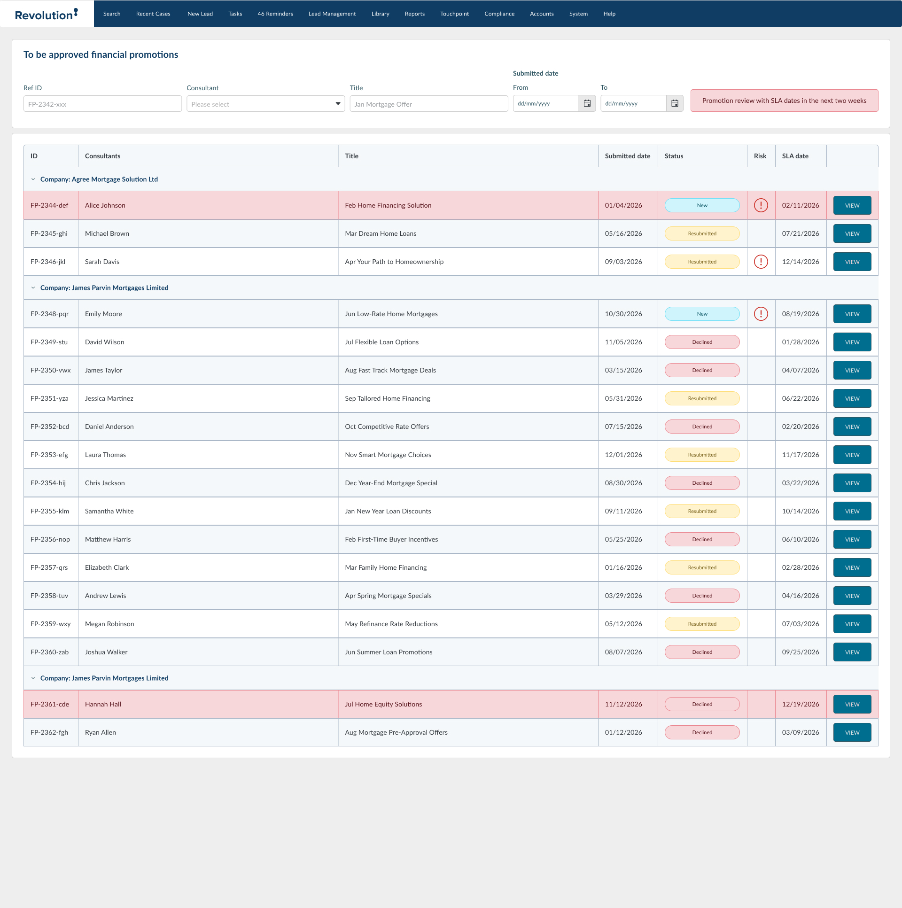
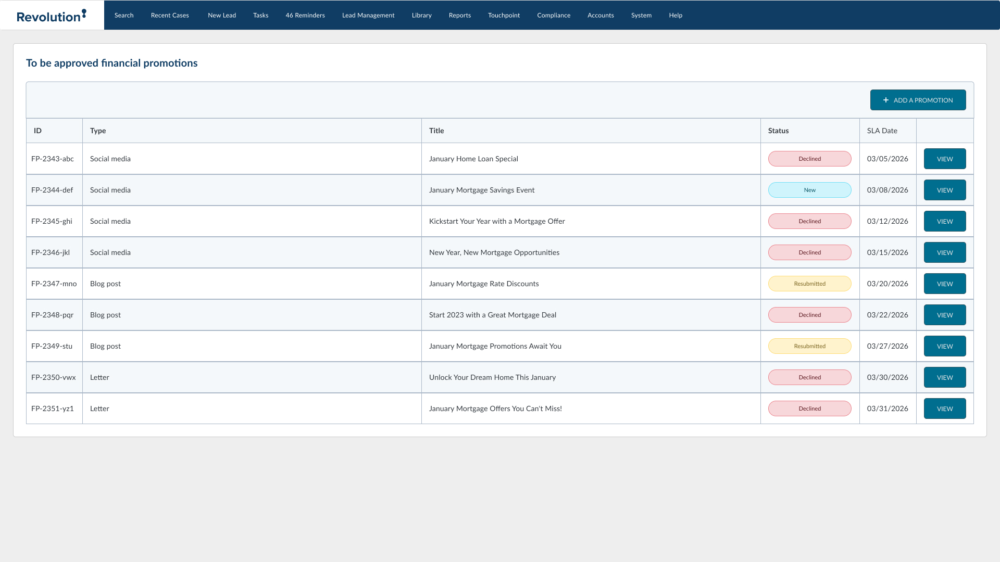

Financial Promotions
Audit Engine
Making compliance actually usable. How we redesigned a bottlenecked system to handle a 196% surge in volume without breaking a sweat.
1. The Duplicate Crisis
In early 2026, our system was slammed with nearly 1,400 promotion uploads in a single month. When I dug into the data, I found a huge issue: over 36% of those were just redundant duplicates.
Because the old system didn't clearly show a file's history, reviewers were essentially starting from scratch every single time a consultant re-submitted a tweak. We had to fix this broken feedback loop immediately.

2. Fixing a "Bonkers" Interface
Users literally described the old table layout as "too complicated" and "bonkers." To fix it, I split the view. We separated the active, urgent work from the historical records. By ripping out useless columns that no one actually looked at, we reclaimed enough screen space to fix annoying zoom bugs and let reviewers focus purely on triage.

Volume
1,374 Items/Mo
Redundancy Fix
36% Duplicate Drop
Efficiency
+196% Load Capacity
Designing for AI Transparency
When new regulatory rules dropped requiring companies to explicitly track AI-generated content, we had to act fast. Instead of making everyone fill out a massive new form, I built a smart, conditional upload flow.
- → Smart Triggers: If a user uploads an image file, the system dynamically triggers the mandatory AI usage questions so they can't be skipped.
- → High-Risk Automation: We added a quick toggle for social media and high-risk products that automatically sets a hard 3-month expiration date for the promotion.

Creating the Paper Trail
Compliance teams love a paper trail. I made sure that once a promotion successfully hits the Approved Library, a permanent, downloadable checklist is automatically generated. This gives both the advisor and the internal auditors exactly what they need, instantly, without ever having to ask IT for a report.